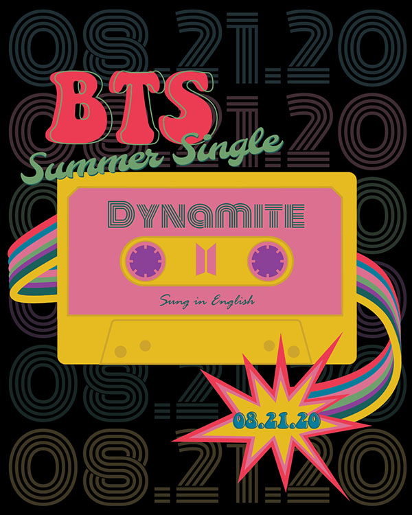
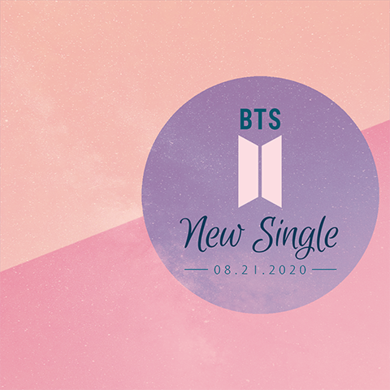
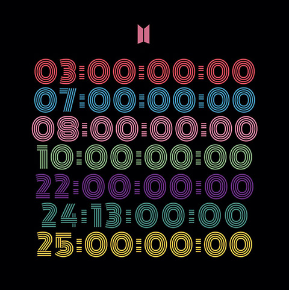
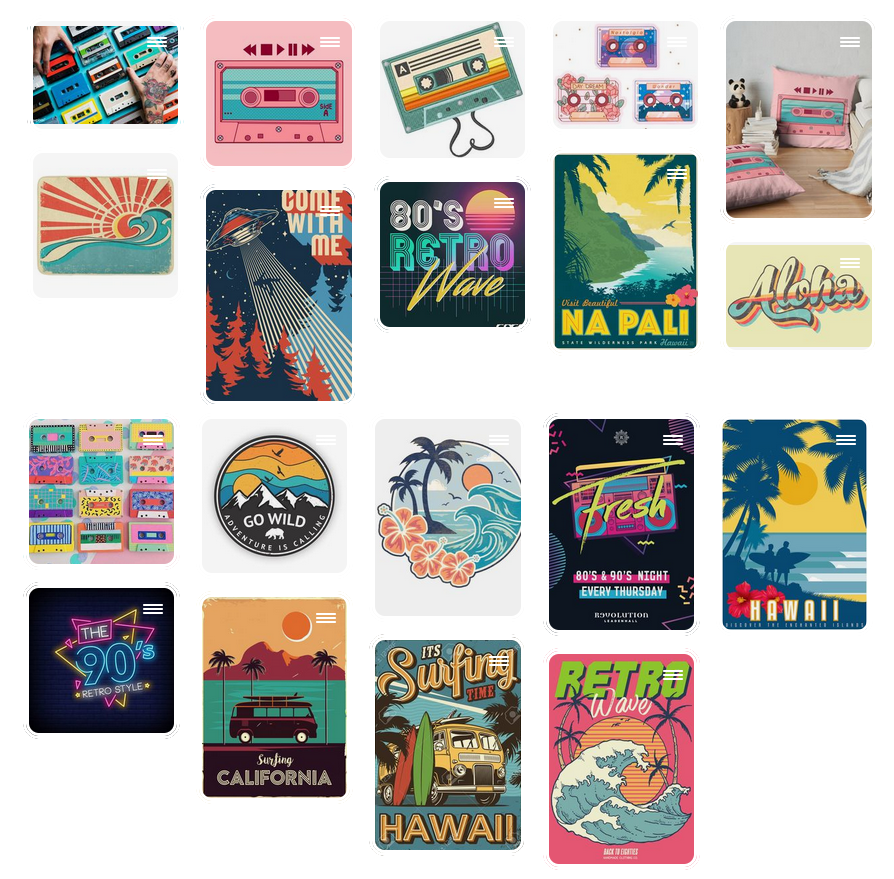

Project Overview
Software: Adobe Photoshop, Adobe Illustrator
The Goal
These images were created as part of a fan-powered movement to promote Korean artists BTS' first
English single, 'Dynamite'. The goal was to apply my graphic design skills to spread the
word through social media platforms such as Instagram. The theme of the images was 'summer' due
to the song's August release date.
Design Goals:
- Composition is visually appealing and suitable for social media platforms when viewed on both PC and mobile.
- All important information is included and visual hierarchy establishes level of importance.
- Design choices communicate available information about the single.
- Design theory guides visual decisions.
The Process
Step One: Concept Development for the First Graphic.
I always start design projects with research. However, when I was making the first
graphic, almost no information about the single was available yet, not even the title. I knew
the release date and I was already familiar with their music and image,
so I focused on that as well as the summer theme for the design. My design was
inspired by the stunning summer sunsets that paint the sky in pink, purple, and orange hues.
When more information about the single was released, I made the second image utilizing that
information.
Step Two: First Graphic Creation.
As there were virtually no concept constraints besides the theme, I prioritized
aesthetics. My personal goals were to keep the graphic minimal, clean, and visually-appealing
while making the information shine. The colour palette I chose would normally cascade across
the sky in a blended gradient, but I split them into three solid shapes to give the graphic a
more minimal and flat appearance. I then created cloud shapes and layered them over the background
on very low opacity. Next, I layered a photograph of the sky using the soft light layer mode to give
the graphic a starry texture. I wanted "New Single" to be the most eye-catching, so I chose Euphoria
Script, a lively, yet elegant font. I balanced that with a thin sans-serif for the date.

One iteration during the design process. Experimented with shapes, colours, and alignment.
Step Three: Concept Development for the Second Graphic.
After making the first image, more information was known about the single. The title
'Dynamite' was released along with a website that contained a countdowns in a distinct font
with vibrant colours. Because the tone was wildly different to my initial promotional image, I
decided to make a second graphic.

Screenshot from the official promotional website.
The official website had a retro tone to it, so I created a moodboard inspired by that. That included the vibrant colours and retro imagery like cassette tapes. 
Moodboard
Step Four: Second Image Creation
I liked the idea of a cassette tape to represent the retro vibe of the new single, so I
created a cassette in Adobe Illustrator. The colours were pulled from the official promotional
website to keep it consistent. I also used Monoton, the same font seen in the countdowns. Another
element that was inspired by the countdowns is the release date repeated in different colours in the
background. I lowered the opacity to ensure the background didn't overwhelm the design. The lines
attached to the cassette represent the fuse of real dynamite. There are seven of them, one for each
member of BTS. The rest of the text is meant to be playful and fun, with an offset outline in a contrasting colour emphasizing "BTS."